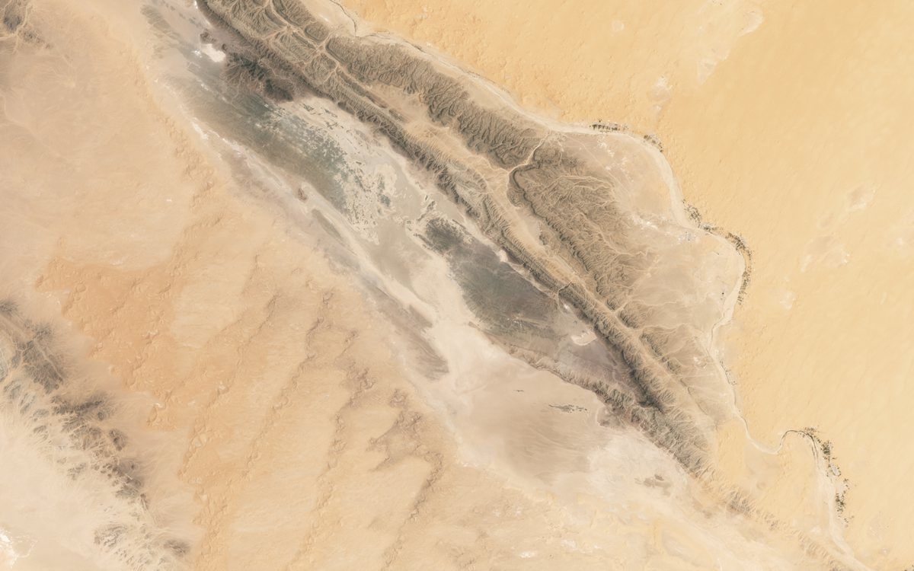
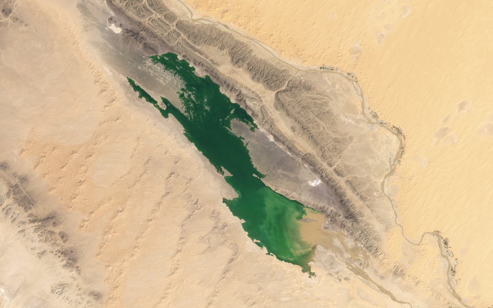

Avant · 12/08/2024Après · 29/09/202401
Eau et sécheresse
Hydrologie, ressources en eau, évapotranspiration, irrigation et surveillance des sécheresses.
Les satellites renseignent sur l'état de la végétation, l'étendue des plans d'eau et l'évapotranspiration. Croisées avec les données climatiques et les mesures de terrain, ces informations aident à suivre les sécheresses et l'usage de l'eau.
Compétences techniques
- Calcul d'indices spectraux (végétation, eau)
- Analyse de séries temporelles et de données climatiques
- Production de cartes de suivi sous SIG